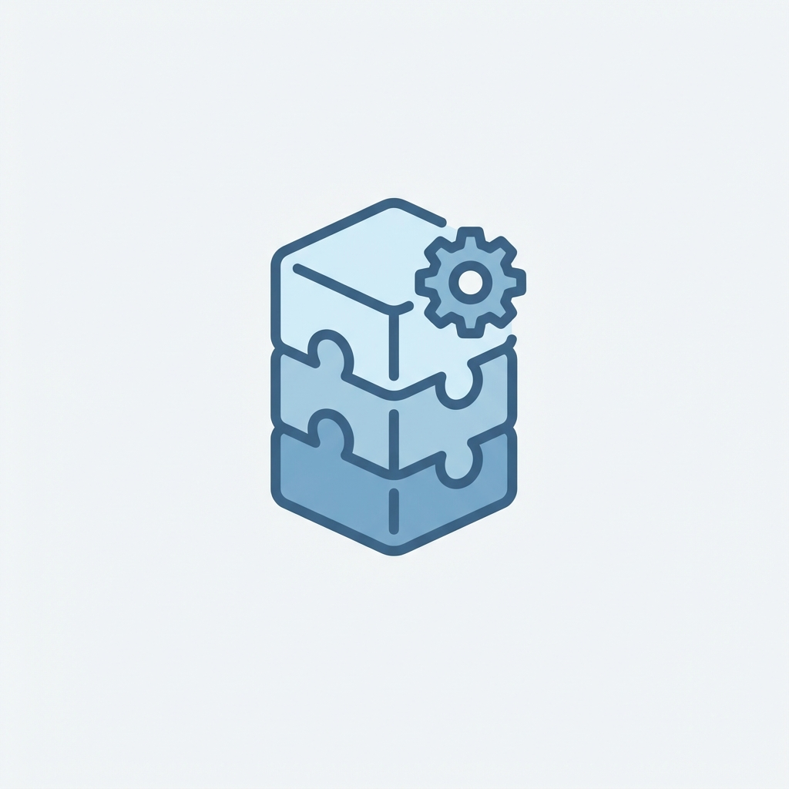

Operator-first RevOps tooling. We bring the playbook and the automation.
RevPal deploys OpsPal plugin suites alongside your team — scoping the work, running the agents, and delivering plans that stick. Pick the focus that fits your operating model.
Choose your RevOps focus
Every solution follows the same cadence: assess, diagnose, align, and deliver with OpsPal doing the heavy lifting.

RevOps Consultants
Org assessments, CPQ reviews, automation audits, and territory planning. 94 Salesforce agents, 59 HubSpot agents, and 30 Marketo agents ready to deploy.
Marketing Operations
Portal health checks, lead scoring models, SEO audits, and campaign attribution. Sub-agents for lifecycle scoring, attribution coverage, and campaign QA.

Revenue Leadership
ARR waterfall, pipeline intelligence, NRR analysis, and GTM scenario modeling with executive-ready outputs.
Platform Administrators
Metadata deployment, data import/export, permission management, reports, and dashboards. 144 safety hooks intercept errors before they happen.
Outcomes from real engagements
Named results from OpsPal-powered projects. Each started with a scoped audit and ended with a measurable outcome.
Automation Forensics
Full automation dependency map across triggers, flows, and process builders in a complex org.
Territory Redesign
Territory2 model analysis, coverage gap detection, and rebalanced assignment rules.
Campaign Influence Pipeline
Multi-touch attribution model built from scratch with workflow automation and reporting.
GTM Systems Implementation
Cross-platform GTM stack build-out across Salesforce, HubSpot, and Marketo.
Data Hygiene at Scale
Duplicate detection, format standardization, and merge operations with zero data loss.
Revenue Assurance
Cross-platform revenue reconciliation identifying leakage across billing, CRM, and finance.
Operating model
Repeatable steps that give RevOps leaders a clear narrative and a plan.
Lead the next RevOps cycle with OpsPal.
Align leaders, prioritize fixes, and keep momentum without the scramble.